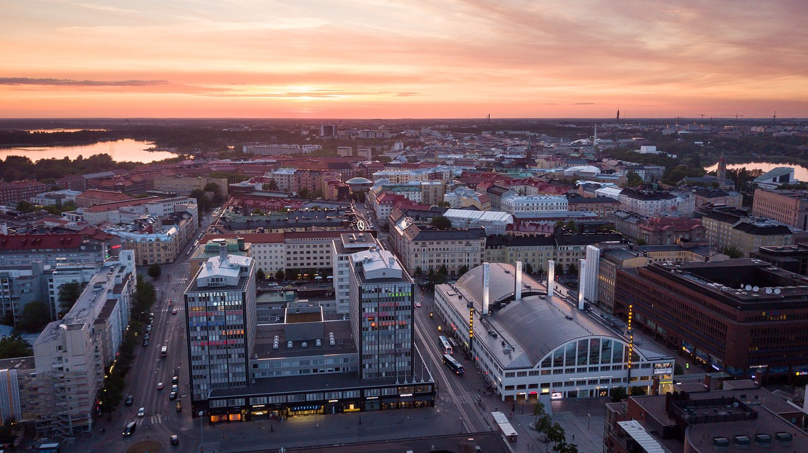
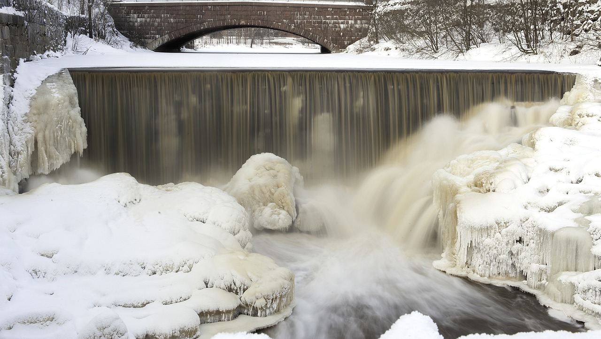
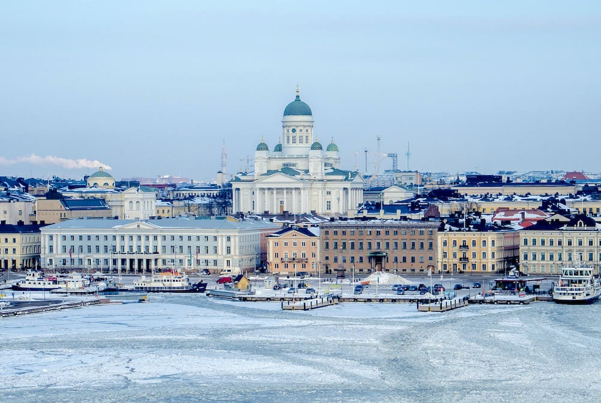
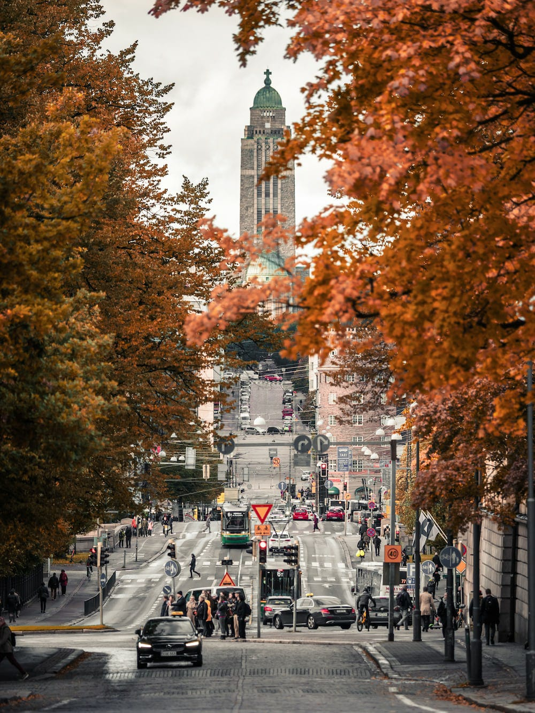
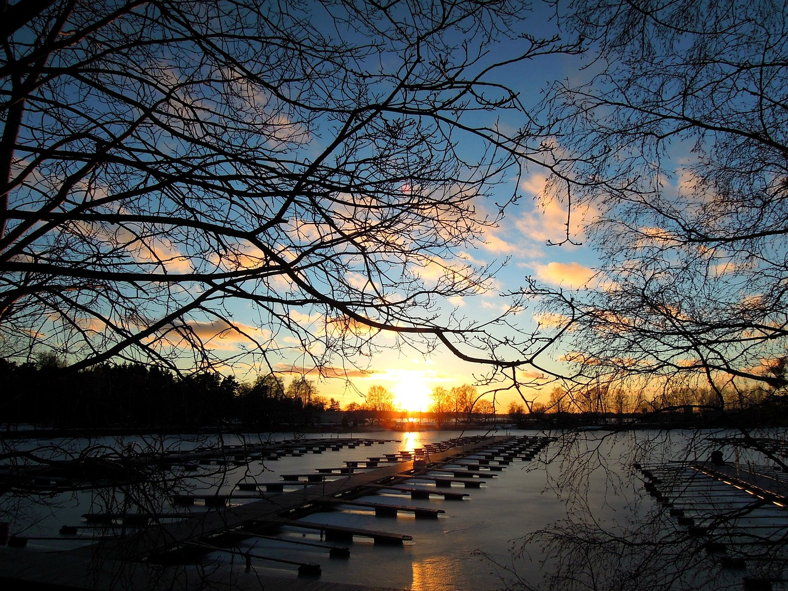

"HELSINKI"





Helsinki Travel Description
Helsinki is the capital of Finland, and it is a popular tourist destination for people from all over the world. The city is known for its stunning architecture, vibrant culture, and beautiful natural surroundings.
One of the best things about Helsinki is its compact size. The city center is easily walkable, and there is a good public transportation system that makes it easy to get around.
Here are some of the top things to see and do in Helsinki:
Visit Helsinki Cathedral:Helsinki Cathedral is one of the most iconic landmarks in the city. It is a white Lutheran cathedral that is located on Senate Square. The cathedral is open to the public, and visitors can climb to the top of the dome for stunning views of the city
Visit Suomenlinna Fortress:Suomenlinna Fortress is a UNESCO World Heritage Site that is located on a group of islands just off the coast of Helsinki. The fortress is a popular tourist destination, and visitors can explore the tunnels, cannons, and other fortifications. Take a ferry to Suomenlinna:** The ferry ride to Suomenlinna Fortress is a great way to see the Helsinki skyline and the surrounding islands. The ferry ride takes about 15 minutes.
Visit the Temppeliaukio Church: Temppeliaukio Church is a unique church that is built into solid rock. The church is known for its excellent acoustics, and it is often used for concerts and other performances.
Visit the Seurasaari Open-Air Museum: Seurasaari Open-Air Museum is a museum that features over 100 traditional Finnish buildings from the 18th and 19th centuries. The museum is located on an island in the Gulf of Finland, and it is a great place to learn about Finnish culture and history.
Enjoy the Helsinki nightlife:Helsinki has a vibrant nightlife scene, with a variety of bars, clubs, and restaurants to choose from. The city is also known for its many festivals, including the Helsinki Festival and the Helsinki City Marathon.
Helsinki is a great city to visit at any time of year, but the summer months are the most popular time to visit. The weather is mild during the summer, and the city is full of life. If you are planning a trip to Helsinki, be sure to book your accommodation well in advance, as the city can get very busy during the summer months.
photo dowload
photo1
photo2
photo3
photo4
photo5